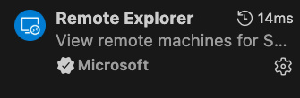

VSCode
Connecting to a compute node
Intuition: SSH'ing into a remote compute can make it hard to both edit and execute files. Many people like to use VSCode, a common IDE, to edit remote files. Beyond just editing, many people prefer to execute code directly from VSCode, which requires connection to a compute node.
One example includes using Jupyter notebook directly on a compute node through VSCode.
Start here
For this example, our mock username will be x-neuromancer, so whenever you see this, replace x-neuromancer with your own username.
Further, if you are using an HPC that is not Purdue's Anvil, replace anvil.rcac.purdue.edu with the correct address of your HPC.
VSCode Setup
Step 1: Download the Remote Explorer extension in VSCode.

Step 2: Edit ~/.ssh/config
We want to start by creating 2 entries:
First: A new host. This SSH config entry contains the information for you to SSH through VSCode onto a login node. I know this isn't what we want right now, but we need this entry. For our example:
Host anvil-neuromancer
HostName login01.anvil.rcac.purdue.edu
User x-neuromancer
Here, we name this config entry anvil-neuromancer. Please change that to the appropriate HPC and username, although the name is arbitrary and can be anything we want. The HostName not only points to the address of the HPC, but it hard-codes a specific login node. If you are not using anvil, your login nodes may have a different naming convention. You can see the name by SSH'ing onto your HPC and typing hostname.
Note
Normally when you ssh onto an HPC, there are several login nodes and you randomly get placed onto one of them. For example, if I type $ ssh x-neuromancer@anvil.rcac.purdue.edu and then $ hostname, I may get login02.anvil.rcac.purdue.edu. The next time, I may get login06.anvil.rcac.purdue.edu.
Second: Match statement so when you eventually SSH directly into the compute node, you go through the login node.
Match host "!login*.anvil.rcac.purdue.edu,*.anvil.rcac.purdue.edu"
ProxyCommand ssh -q -W %h:%p anvil-neuromancer
Warning
Please note the pattern login*.anvil.rcac.purdue.edu. If your HPC has a different naming convention for login nodes, you'll have to change this. For example, if you had login_node08.albion.edu, your match statement would be: `"!login_node*.albion.edu".
Why do we need this config block? The answer is because we cannot automatically SSH onto a compute node without first SSH'ing onto a login node. This gets blocked by SLURM, the job scheduling agent on most HPCs. When you try to SSH onto a compute node, what happens behind the scenes is it requires that you have an active job running on that compute node already. Imagine if we could just SSH onto a compute node without first scheduling a job there - we could hack the system and use all the compute resources!
This match block allows us to reach our destination of a Compute Node by telling the SSH agent to first SSH into the login node, then jump to the compute node. This allows the connection to check if we have a valid, running job on a compute node and approve our request if so. You probably guess the next step already.
Step 3: Start an interactive job.
Here, use $ sinteractive or some method to start an interactive job on your terminal. Once you get access, note the specific compute node address it assigned you:
$ hostname
# a241.anvil.rcac.purdue.edu
Above, let's say we are assigned the compute node a241.
Step 4: Add a SSH config entry for the compute node
Let's open back up that ~/.ssh/config and add an entry for us to SSH directly onto the compute node.
Host anvil-compute
HostName a241.anvil.rcac.purdue.edu
ProxyCommand ssh -q -W %h:%p anvil-neuromancer
Above, we name this config entry anvil-compute to differentiate it from anvil-neuromancer, which was our entry to SSH into the login node.
The HostName uses the specific node (or hostname) we were provided in our interactive session!
Important
Each time you run an interactive session, you may not get the same compute node! We know it's annoying, but if you get a different compute node when you run a job tomorrow, you must change the value of the HostName in your config. You could also add several config entries, each for all the compute nodes, but that's not very practical.
The ProxyCommand must end by matching the Host that defined SSHing into the login node (anvil-neuromancer). Make sure these match. This part tells the SSH agent: to login to this compute node (a241), first go through the login node, and then login to the compute node. If we do not do this, our connection will be blocked.
Step 5: SSH onto the login node
In VSCode, type Cmd/Window + Shift + P to open the command palette, and find Remote-SSH: Connect to Host.... You should see anvil-compute, or whatever you named it. Click on this and you'll have a new VSCode session connected to a compute node!
Step 6: Running a Jupyter Notebook interactively.
For this, I suggest installing the Jupyter, Jupyter Cell Tags, and Jupyter Keymap extension for VSCode.
Open up a folder from your remote HPC and find your Jupyter Notebook in the file explorer. Click on it to open it up; it should look like your comfortable Jupyter Notebook interface.
To run code, you'll need to specify a kernel, which can be a virtual environment (this is because VSCode takes care of the server and just needs a path to point to). When you first click the Run button to the left of your code cell, it'll prompt you to specify a kernel/environment. If you do not have a virtual environment setup, create one for your notebook.
Note
To create a virtual environment, you can go into the VSCode terminal and type $ python -m venv .venv and it'll create a folder called .venv that contains your virtual environment. Point your Jupyter kernel here and it'll run through that. To add new packages, activate the environment ($ source .venv/bin/activate using terminal) and then pip install <package>. You can also use anaconda/conda for package management, or uv.
Step 7: Verifying you are running on a compute node.
Finally, let's make for certain we are running on a compute node. Type the following into a cell in your Jupyter notebook:
import socket
print(socket.gethostname())
>>> a241.anvil.rcac.purdue.edu
Above, ensure the output prints the correct compute node (a241.anvil.rcac.purdue.edu for my example), and not a login node (login01.anvil.rcac.purdue.edu).
Now you are an SSH and VSCode wizard, Harry!